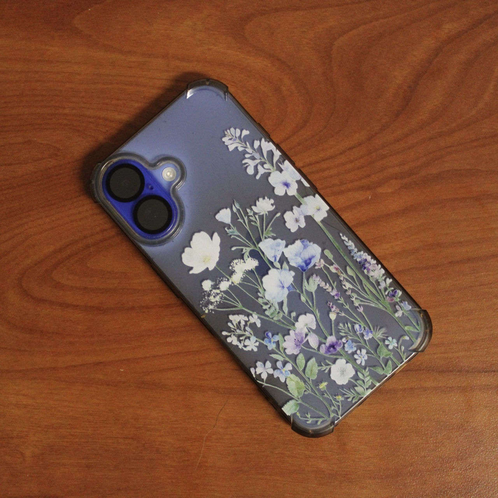
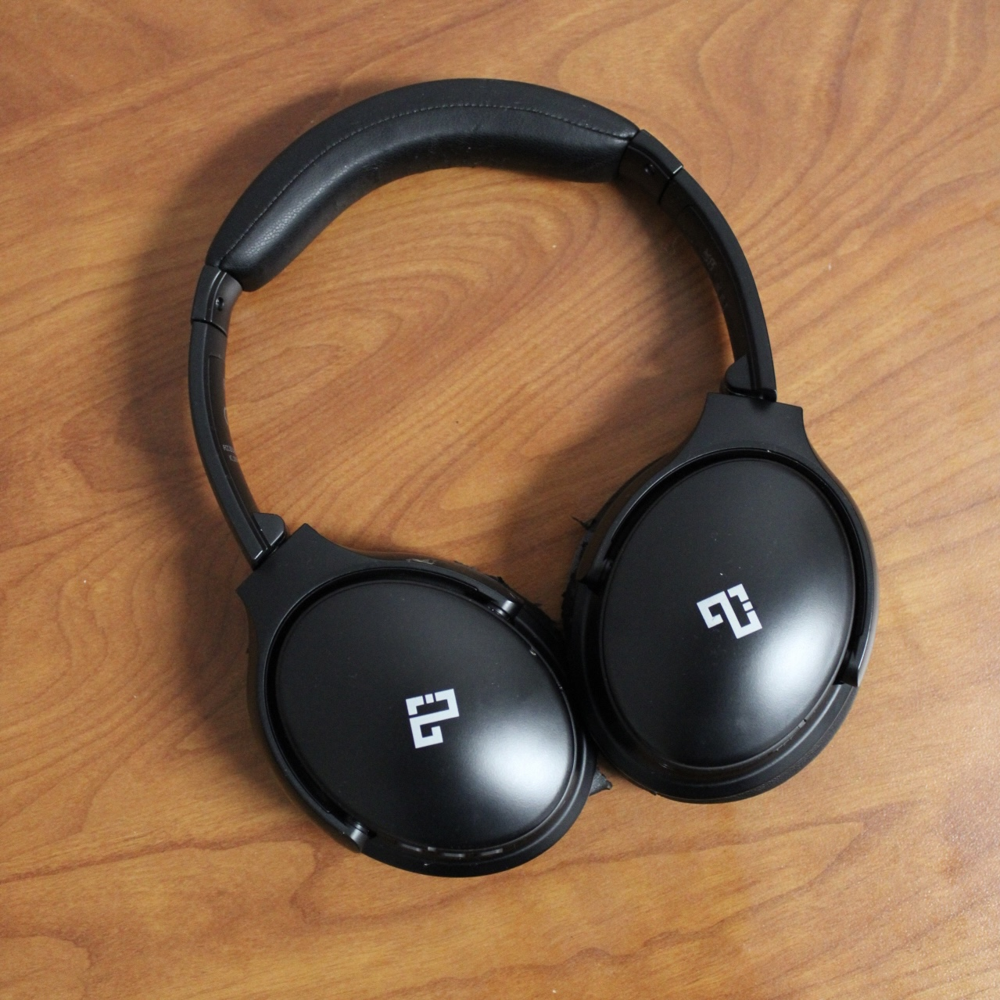
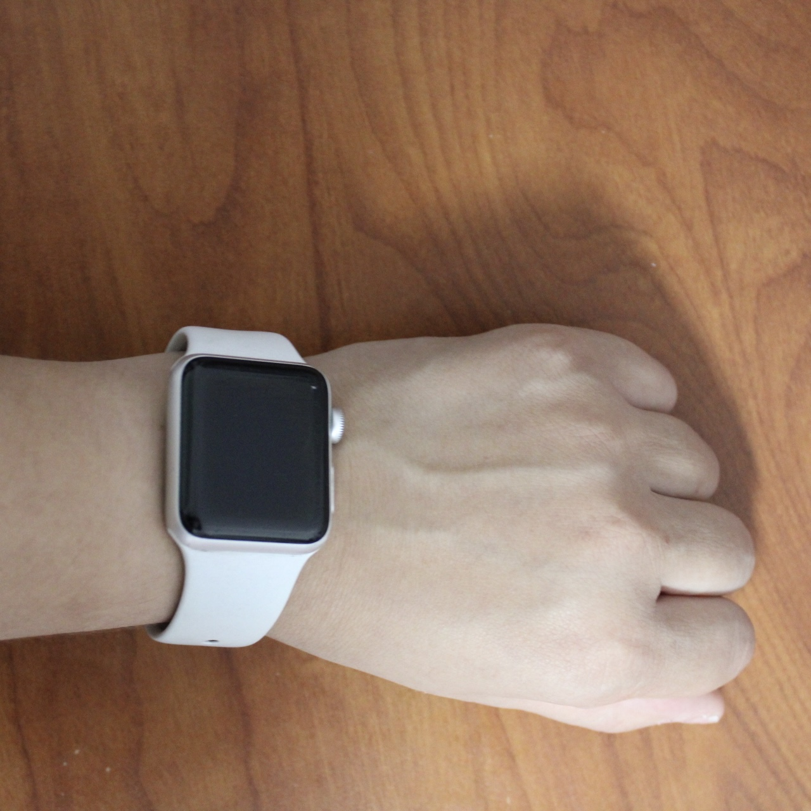
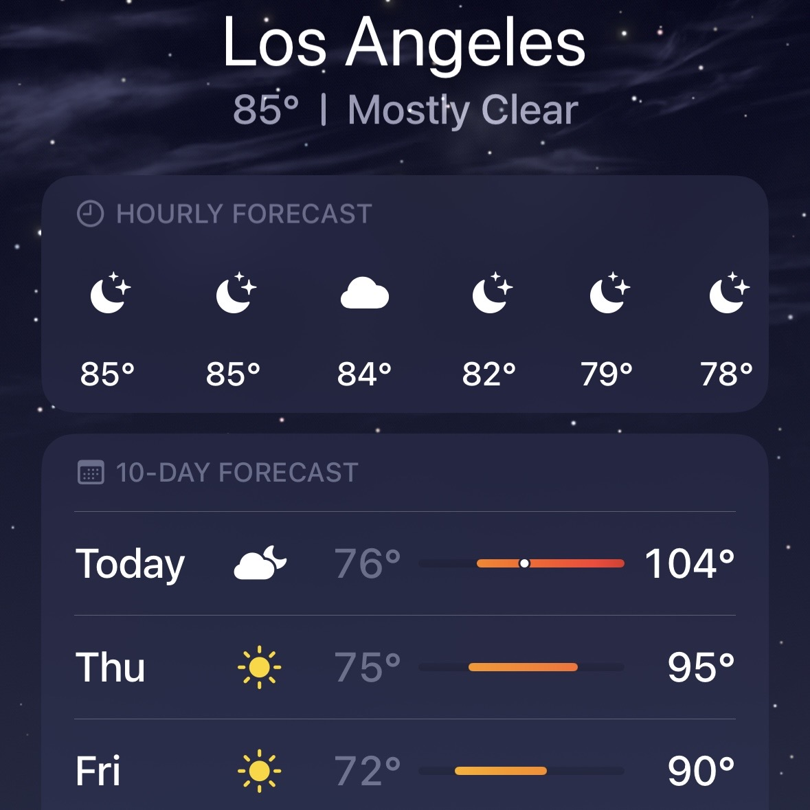
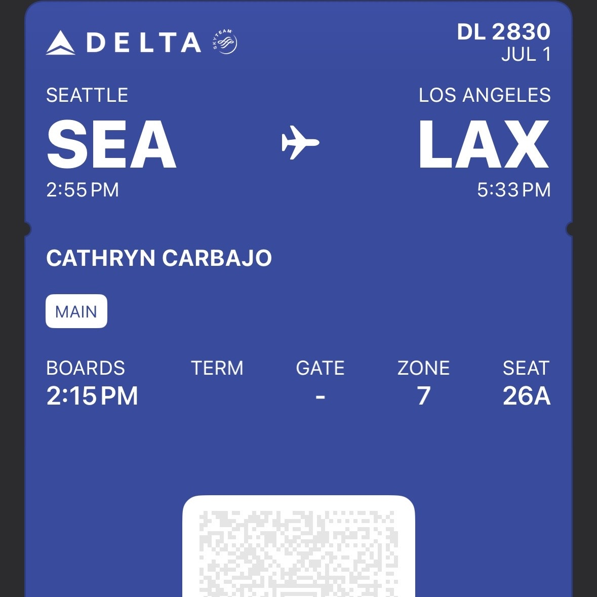

Laptop
From mood boarding my trips to organizing and paying for my flights, I use my laptop for everything. I use it to research and plan my trips, and to stay connected with friends and family while I'm on the go.

Mouse
Theres not much to say about my mouse but it is very helpful when I am using my laptop. It is a wireless mouse that I use to navigate my laptop and it is very responsive and easy to use.

Ipad
While traveling sometimes it gets annoying taking my laptop out for entertainment. So I use my Ipad to watch movies and shows on the go or just to draw digitally keeping me entertained.

Phone
My phone is my lifeline when I am traveling. I use it to stay connected with friends and family, to navigate my way around new cities, and to take photos and videos of my trips.

Chargers
This is technology were talking about so it doesnt make sense to not have chargers. I use my chargers to keep my devices powered up and ready to go. I have a charger for my laptop, my phone, and my Ipad.

Charging Box
When on the go what do the chargers connect to? My charging box. I use my charging box to keep all of my devices charged and ready to go. It is a portable charger that I can take with me on the go and it is very convenient.

Headphones
Music is a staple in my life and I use my headphones to listen to music while I am traveling. I use them to listen to music on my laptop, my phone, and my Ipad. They are wireless and very comfortable to wear.

Watch
When planning activities while traveling I use my watch to keep track of time. I use it to set alarms and reminders for activities and to keep track of time zones when traveling internationally.
Southwest Web
For finding and booking flights I use the Southwest website. I use it to search for flights, compare prices, and book my flights. It is very user friendly and easy to navigate.
Delta Web
However if I am looking for a different airline I use the Delta website. I use it to search for flights, compare prices, and book my flights.

Weather App
It is crucial to know the weather when traveling so I use the weather app on my phone to check the weather in the cities I am traveling to. I use it to check the forecast, and to plan my activities accordingly.

Tickets
The final important thing to have when traveling is tickets. I use my tickets to get into events and activities that I have planned for my trips. I keep them on my phone so I can easily access them when needed and because most tickets are now digital.